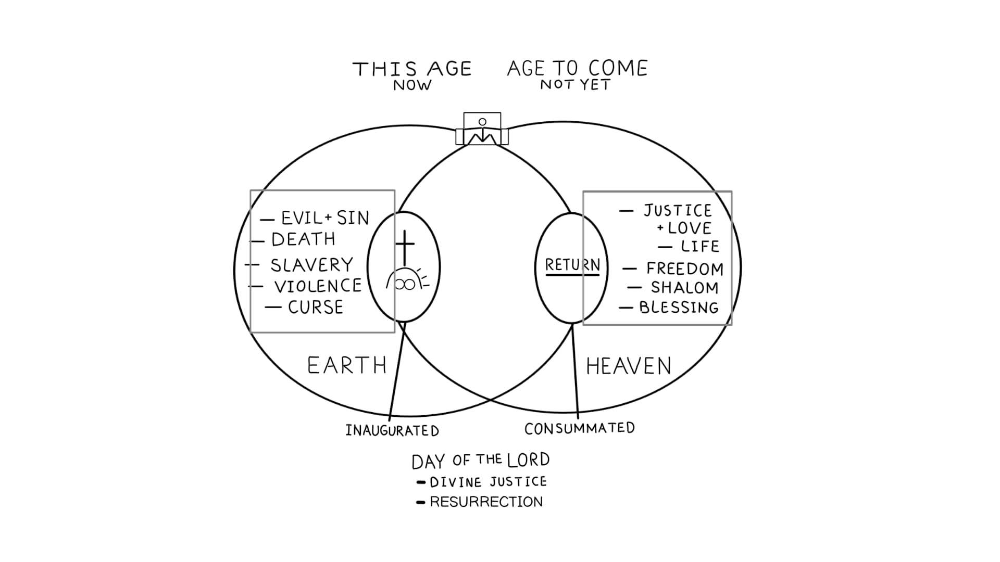

Sessão 12: Refletindo sobre Esta Era e a Era VindouraSession 12: Reflecting on This Age and the Age to Come
Principais LiçõesKey Takeaways
- Vivemos nas realidades sobrepostas desta era e da era vindoura.We live in the overlapping realities of this age and the age to come.
- Paulo tem uma cosmovisão completamente estranha comparada à nossa; ao perceber isso, entendemos melhor a ele.Paul has a completely foreign worldview compared to our own; realizing this lets us understand him better.
A Visão de Paulo sobre as ErasPaul's Vision of This Age and the Age to Come
Os valores desta era (honra, poder, status, posse) e da era vindoura (justiça, humildade, serviço, comunhão) colidem no presente. Paulo convida a igreja a viver segundo os valores da era vindoura já agora, pois em Cristo as duas eras se encontram. Reconhecer a cosmovisão de Paulo — tão diferente da moderna — é o primeiro passo para ler Efésios com precisão.The values of this age (honor, power, status, possession) and the age to come (justice, humility, service, communion) collide in the present. Paul invites the church to live by the values of the coming age already now, because in Christ the two ages meet. Recognizing Paul's worldview — so different from the modern — is the first step to reading Ephesians accurately.
Pergunta de ReflexãoReflection Question
Todos os dias participamos de uma das duas criações: uma que está passando ou uma que já começou, mas ainda não se realizou plenamente. Como você experimenta ou participa da realidade do “ainda não” ou da “era vindoura” na sua vida hoje?Every day we participate in one of two creations: one that is passing away or one that has begun but is not yet fully realized. How do you experience or participate in the reality of the "not yet" or "age to come" in your life now?
Módulo 5: IdentidadeModule 5: Identity

Sessões 13-15Sessions 13-15
Como você entende a ideia de graça — ela é imerecida, incondicional? Olhe mais de perto o desenho geral de Efésios 2:1-10 e a visão de Paulo sobre a graça.How do you understand the idea of grace—is it unmerited, unconditional? Look closer at the overall design of Ephesians 2:1-10 and Paul’s view of grace.